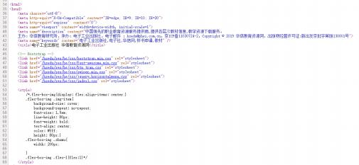
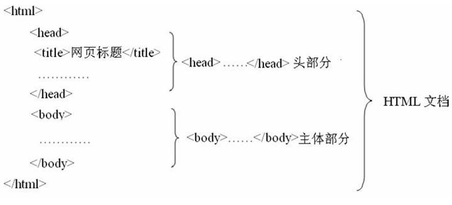
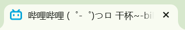

模块一 HTML文档入门
考纲要求：掌握常用的HTML标签
1.1HTML文档入门
HTML语言概述
- HTML（Hypertext Marked Language，超文本标记语言）是用于创建Web文档的一种标记语言。自1990年首次用于网页编辑后，由于其编写制作的简易性，HTML迅速成为网页编程的主流语言，几乎所有的网页都是由HTML或其他语言程序嵌套在HTML语言中编写的。
- 在IE浏览器任意打开一个网页，选择“查看→源文件”命令，系统会启动记事本程序，打开该网页的源程序，如图所示。
-

查看源程序
HTML文档基本结构
- 一个HTML文档是由一系列的网页元素和标记组成的，HTML用标记来规定元素的属性和它在文件中的位置。HTML文档的结构包括头部分（head）和主体部分（body）两大部分，其中头部分描述浏览器所需的信息，主体部分则包含了所要说明的具体内容，具体结构如图所示。
-

HTML文档基本结构
- 由上面可以看出：
-
（1）HTML文档包括3个主要标记，文档标记<html>……</html>、头部标记<head>……</head> 和主体标记<body>……</body>。
（2）标记不区分大小写。</p>
（3）所有的标记都要用尖括号<>括起来。
- <html>标记用于HTML文档的最前面，用来标识HTML文档的开始，而</html>标记恰恰相反，它放在HTML文档的最后面，用来标识HTML文档的结束，这两个标记必须成对使用。
- 在<head>……</head>内，称为文件头部，可以包含<title></title>、<meta>等标记，这部分信息不会在浏览器的窗口中显示出来。
- 在<body>……</body>内，称为正文主体，可包含<p></p>、<img>、<hr>、<table>等标记，其内容将在浏览器窗口中显示出来。
1.2HTML文档常用标记
（1）标题标记
- 格式：<title>网页的标题</title>
-

bilibili网页的标题
-
说明：该标记在<title></title>标记中，所包含的文字将出现在浏览器的标题栏上。当用户将此页面添加到收藏夹时，也会默认以该标题为名称收藏。
（2）主体标记
- 格式：<body bgcolor="页面背景颜色" background="背景图像" text="文本颜色">主体内容</body>
-
说明：包括所有主体内容，可以设置页面的背景颜色、背景图像、文字颜色等属性。背景颜色和文本颜色可以使用颜色名（如蓝色：blue）或颜色代码值（如蓝色：#0000FF）来表示。
（3）文字标记
- 格式：<font size="文字大小" face="字体" color="文本颜色">文本内容</font>
-
我是文字8级和7级一样大
我是文字7级
我是文字6级，设置了字体和颜色
我是文字7级，
我是文字7级，
我是文字7级，
我是文字7级，
我是文字7级，
我是预设字体大小
我比预设字体大1级
我比预设字体大2级
我比预设字体大3级
我比预设字体大4级
我比预设字体大5级，和4级大小一样 -
说明：<font>标记用于设置网页中文字的字号、字体、颜色等属性。设置字号时，<font size=1>（最小）、<font size=7>（最大）、<font size=+1> （比预设字大一级）、<font size=-1>（比预设字小一级）。例如：将文本“最新通知” 设置为楷体_GB2312，大小为4。<font size="4" face="楷体_GB2312">最新通知</font;>
（4）段落标记
- 格式：<p align="对齐方式">段落文本</p>
-
我是左对齐（默认对齐方式） 我是一个段落 我是一个段落 我是一个段落 我是一个段落 我是一个段落 我是一个段落 我是一个段落 我是一个段落 我是一个段落 我是一个段落
我是居中对齐 我是一个段落 我是一个段落 我是一个段落 我是一个段落 我是一个段落 我是一个段落 我是一个段落 我是一个段落 我是一个段落 我是一个段落
我是右对齐 我是一个段落 我是一个段落 我是一个段落 我是一个段落 我是一个段落 我是一个段落 我是一个段落 我是一个段落 我是一个段落 我是一个段落
我是两端对齐 This is some text in a paragraph. This is some text in a paragraph. 我是一个段落 我是一个段落 我是一个段落
-
值 描述 left 左对齐内容。 right 右对齐内容。 center 居中对齐内容。 justify 对行进行伸展，这样每行都可以有相等的长度（就像在报纸和杂志中）。 -
说明：由<p>标记所标识的文字代表同一个段落的文字。其中align属性有left、center和right三个参数，这三个设置分别代表左对齐、居中对齐和右对齐。
（5）换行标记（单标记）
- 格式：<br>
-
天见其明，地见其光，君子贵其全也。落霞与孤鹜齐飞，秋水共长天一色。
使用换行标记，产生文字换行显示效果。
天见其明，地见其光，君子贵其全也。
落霞与孤鹜齐飞，秋水共长天一色。 -
说明：<br>是个单标记，HTML文件中任何位置只要使用了<br>标记，当文件显示在浏览器中时，该位置之后的文字将显示于下一行。
（6）水平线标记（单标记）
- <hr align="对齐方式" color="颜色" width="宽度" size="高度" noshade >
-
默认的水平线
插入一条左对齐，颜色为红色，宽度500像素，高度10像素，取消阴影的水平线
-
说明：在网页中插入一条水平分隔线，将不同的内容信息分开，使文字看起来清晰、明确。noshade用于设置水平为实心线（默认情况下为阴影线）。如果想插入一条垂直线则将宽度设为较小值，高度设为较大值即可。
（7）图像标记（单标记）
- <格式：img src="图像地址" align="对齐方式" width="宽度" height="高度" alt="替换文字" boder="边框宽度">
-
图像不能正常显示或者未加载完成之前将显示alt中的文本👉
-
说明：在页面中插入一幅图像，图像地址可以是本地计算机上的文件，也可以是一个URL地址，但图像必须是GIF、JPG/JPEG或PNG格式的，其他格式的图像不能被插入到网页中。Alt参数用于设置图像的说明信息，当浏览器不能显示图像时，则用该参数指定的文本替换特定的图片。若图片正常显示，则当鼠标指该图片时也会显示该文字。
（8）超链接标记
- <a href="目标文件的URL" target="打开窗口的方式">文本或图像</a>
（1）内部链接
链接到主页
（2）外部链接
链接到百度
（3）E-mail部链接
打开默认的电子邮件程序
（4）锚记链接
在某个Web页面中创建一个被称为“锚点”的标记，让页面上的另外一个位置引用，相当于在某个文件中重要之处做上书签，需要该部分时直接查找书签就能找到此部分。 例如，在某HTML文档中定义一个abc的锚记。
<a name="abc">第五章</a>
然后在该文档的另外一个位置创建一个锚记链接。
<a href="#abc">单击返回第五章</a><-
为标记中的文本或图像添加超链接目标，浏览网页时单击可打开指定的目标文件。target用于指定打开目标窗口的方式，默认情况是在当前窗口中打开，如果要在新窗口中打开目标窗口，则可将target的属性值设为"_blank"。
（9）表格标记
表格标记由表格标记、行标记和单元格标记3部分组成。
-
①表格标记
格式：<table bgcolor="背景颜色" background="背景图像" width="宽度" height="高度" align="对齐方式" border="边框宽度" cellpadding="单元格边距" cellspacing ="单元格间距">……</table>
②行标记
格式：<tr bgcolor="背景颜色" height="高度" align="对齐方式" >……</tr>
③单元格标记
格式：<td rowspan="跨越行数" colspan ="跨越列数" bgcolor="背景颜色" background="背景图像" width="宽度" height="高度" align="对齐方式" >……</td>
-
说明：单元格边距是指单元格内容与单元边框之间的像素数，单元格间距是指相邻单元格之间的距离。
（10）表单标记
- 格式：<form name="表单名称" method="提交方式" action="文件"><form>
-
说明：表单标记与动态网页制作是分不开的，action="文件"是指这个表单提交后，将传送给哪个文件处理；method="提交方式"是指将表单信息提交给服务器的方式，一般包括POST（以文件形式不限制长度提交）和GET（附加在URL地址后限制长度提交）两种。
- （1）文本域
-
①单行文本域（单标记）：输入的信息原样显示。
格式：<input type="text" name="文本域名称" value="初始值">
例：
-
②密码文本域（单标记）：输入的信息以“ · ”显示。
格式：<input type="password" name="文本域名称" value="初始值">
例：
-
③多行文本域：输入的信息可以是多行，一般用于简介、留言等。
格式：<textarea name="文本框名称" cols="文本框宽度" rows="行数"></textarea>
- （2）选择域
-
①单选按钮（单标记）：只允许选择一项，一般用于性别等选项。
格式：<input type="radio" name="选择域名称">
例：
-
②复选框（单标记）：可以进行多项选择，一般用于爱好、特长等选项。
格式：<input type="checkbox" name="选择域名称">
例：
- （3）菜单域
-
①下拉菜单：让浏览者在给出的菜单中进行选择，如籍贯、类别、日期、学历等。
格式：
<select name="菜单名称">
<option value="">菜单中的第一个值</option>
<option value="">菜单中的第二个值</option>
<span>......</span>
</select>例：
-
②滚动菜单：提供一个带滚动条的菜单
格式：
<select name="菜单名称" size="显示选择项的个数">
<option value="">菜单中的第一个值</option>
<option value="">菜单中的第二个值</option>
<span>......</span>
</select>例：
- （4）按钮域
-
①提交按钮（单标记）：输入的内容提交给相关程序，让服务器对其进行处理。
格式：<input type="submit" name="按钮域名称" value="提交">
例：
-
①重置按钮（单标记）：把输入的内容清除，并重新输入。
格式：<input type="reset" name="按钮域名称" value="重置">
例：
（11）滚动标记
- 格式：<marquee behavior="方式" direction="方向" scrollamount="速度" onMouseOver="this.stop()" onMouseOut="this.start()" bgcolor="背景颜色"></marquee>
-
-
说明： ①方向（direction）left（左）right（右）up（上）down（下）。
②方式（behavior）alternate（来回滚动）slide（滚动一圈）scroll（循环滚动）。
③速度（scrollamount）值越大，文本滚动速度越快。
（12）音频标记
- 格式：<audio src="音频文件地址" controls="播放控制条显示属性"></audio>
-
说明： ①src属性用来指定需要嵌入页面中的音频文件地址。 ②controls属性用来设置是否显示播放控制条。
（13）视频标记
- 格式：<video src="视频文件地址" width="宽度" height="高度" controls="播放控制条显示属性"></video>